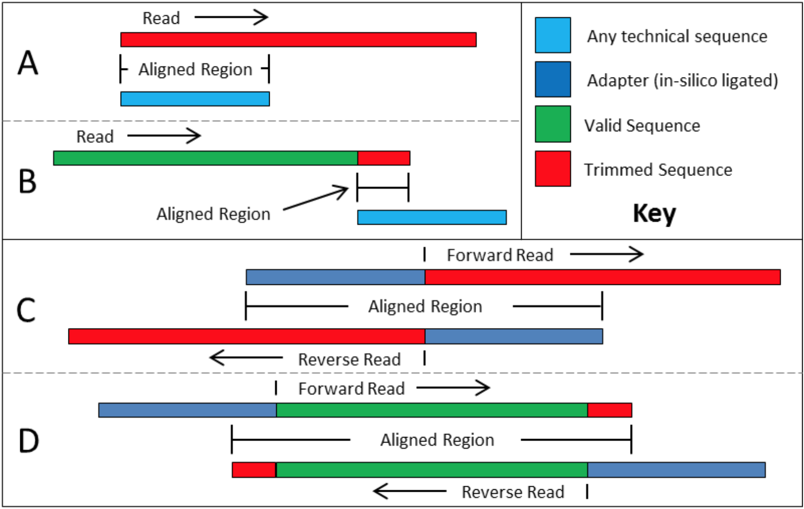

Data QC
Bastian Schiffthaler, Nicolas Delhomme
The golden rules
- Always look at your data
- Always do something justifiable
- Always write everything down
- If you modify your data:
goto 1 - Know when you're out of your depth and ask for help
Book

ISBN-13: 978-1449367374
ISBN-10: 1449367372
What is our data?
- FASTQ (Today)
- Compressed FASTQ (Today)
- BAM, BAX.h5, BAS.h5
What's in a FASTQ file
1: @HWI-ST188:4:1101:15800:104385#0/1
2: CAACATTTGGGGAGCTAAGTCCTCATGTTTTTGCTGTTGGTGATGCTGCATA
3: +
4: a__eeeeegcgcghhiihhghhihhiiiiiiighihiihffghi_fhhhhhi
- The read ID. Platform, position, mate
- The actual sequence
+- The PHRED encoded base quality
Let's see for ourselves
| Index | First | Second |
| 1 | P11562_108_S8_L001_subset_1.fq.gz | P11562_108_S8_L001_subset_2.fq.gz |
| 2 | P11562_110_S9_L001_subset_1.fq.gz | P11562_110_S9_L001_subset_2.fq.gz |
| 3 | P11562_111_S10_L001_subset_1.fq.gz | P11562_111_S10_L001_subset_2.fq.gz |
| 4 | P11562_112_S11_L001_subset_1.fq.gz | P11562_112_S11_L001_subset_2.fq.gz |
| 5 | P11562_113_S12_L001_subset_1.fq.gz | P11562_113_S12_L001_subset_2.fq.gz |
| 6 | P11562_114_S13_L001_subset_1.fq.gz | P11562_114_S13_L001_subset_2.fq.gz |
| 7 | P11562_115_S14_L001_subset_1.fq.gz | P11562_115_S14_L001_subset_2.fq.gz |
| 8 | P11562_134_S31_L001_subset_1.fq.gz | P11562_134_S31_L001_subset_2.fq.gz |
| 9 | P11562_135_S32_L001_subset_1.fq.gz | P11562_135_S32_L001_subset_2.fq.gz |
| 10 | P11562_136_S33_L001_subset_1.fq.gz | P11562_136_S33_L001_subset_2.fq.gz |
| 11 | P11562_137_S34_L001_subset_1.fq.gz | P11562_137_S34_L001_subset_2.fq.gz |
| 12 | P11562_138_S35_L001_subset_1.fq.gz | P11562_138_S35_L001_subset_2.fq.gz |
| 13 | P11562_139_S36_L001_subset_1.fq.gz | P11562_139_S36_L001_subset_2.fq.gz |
Some commands (finally)
#Not compressed (boo!)
less <path_to_fq>
#Gzip
zless <path_to_fq.gz>
#Bzip2
bzless <path_to_fq.bz2>
#Quit (b)(z)less with [q]ASCII encoding and PHRED
$$ PHRED = -10\log_{10}p $$
$p$: The probability of error
What's the PHRED score of a base that's 98.2% accurate
ASCII encoding and PHRED

"That" table
SSSSSSSSSSSSSSSSSSSSSSSSSSSSSSSSSSSSSSSSS.....................................................
..........................XXXXXXXXXXXXXXXXXXXXXXXXXXXXXXXXXXXXXXXXXXXXXX......................
...............................IIIIIIIIIIIIIIIIIIIIIIIIIIIIIIIIIIIIIIIII......................
.................................JJJJJJJJJJJJJJJJJJJJJJJJJJJJJJJJJJJJJJJJ.....................
LLLLLLLLLLLLLLLLLLLLLLLLLLLLLLLLLLLLLLLLLL....................................................
!"#$%&'()*+,-./0123456789:;<=>?@ABCDEFGHIJKLMNOPQRSTUVWXYZ[\]^_`abcdefghijklmnopqrstuvwxyz{|}~
| | | | | |
33 59 64 73 104 126
0........................26...31.......40
-5....0........9.............................40
0........9.............................40
3.....9..............................41
0.2......................26...31........41
S - Sanger Phred+33, raw reads typically (0, 40)
X - Solexa Solexa+64, raw reads typically (-5, 40)
I - Illumina 1.3+ Phred+64, raw reads typically (0, 40)
J - Illumina 1.5+ Phred+64, raw reads typically (3, 41)
with 0=unused, 1=unused, 2=Read Segment Quality Control Indicator (bold)
L - Illumina 1.8+ Phred+33, raw reads typically (0, 41)R
i = as.integer(charToRaw('e'))Python
i = ord('e')C-Family
int i = 'e';JavaScript
let i = 'e'.charCodeAt(0);Preprocessing steps
FastQC
Let's get our hands dirty
A reminder
Change directory
cd <path>Make a directory
mkdir <path>Link files
ln -s <source> <target>Copy files
cp <source> <target>...and a word about good practice in Bash
#!/usr/bin/env bash
# Fail on error. Append `|| true` to commands that are allowed to fail
set -o errexit
# Fail on errors in subcommands
set -o errtrace
# Fail on errors in pipes
set -o pipefail
# Fail on unset variable
set -o nounset
# Print trace info
set -o xtract
echo "Hello, world!"FastQC
fastqc -h- Purpose: Visualizing the quality of a single library file
- Outcome: Report (html) with various QC stats for our data
MultiQC
We want to do this after every step in this practical
multiqc -h- Purpose: Visualizing the quality of all library files
- Outcome: Summary report (html) with even more for our data
SortmeRNA
Software made to select for rRNA/OTUs. We use it to remove those from our dataset.
sortmerna -hSORTMERNA_DB=/db/sortmerna/smr_v4.3_default_db.fastaecho $SORTMERNA_DB- Purpose: Detecting and removing rRNA contamination from libraries
- Outcome: A processed library filtered for reads that do not match rRNA sequences (or PhiX)
Trimmomatic
Implements various read quality based trimmers. Best to glance over the manual
trimmomatic -h- Purpose: Removing low quality reads (or parts of reads)
- Outcome: A processed library filtered for reads that do not pass a quality threshold
ILLUMINACLIP
ILLUMINACLIP:
<fastaWithAdaptersEtc>:
<seed mismatches>:
<palindrome clip threshold>:
<simple clip threshold>ILLUMINACLIP:TruSeq3-PE.fa:2:30:10Simple vs Palindrome
SLIDINGWINDOW
SLIDINGWINDOW:
<windowSize>:
<seed requiredQuality>SLIDINGWINDOW:5:5Example
CAACATTTGGGGAGCTAAGTCCTCATGTTTTTGCTGTTGGTGATGCTGCATA
a__eeeeegcgcghhiihhghhihhiiiiiiighihiihffghi_fhhhhhi
^^^^^: 33.8
^^^^^: 34.6
^^^^^: 35.8Bonus: KRAKEN2
Kraken2 uses efficient computational datastrucures to determine sequence similarity.
kraken2 -h/db/kraken2/defaultSee also this manual: https://genomics.sschmeier.com/ngs-taxonomic-investigation/index.html
Haven't had enough of QC yet?
- Read error correction: Rcorrector
- Screen read sources: FASTQ Screen
- General toolbox: BBTools
- K-Mer based analysis: KAT